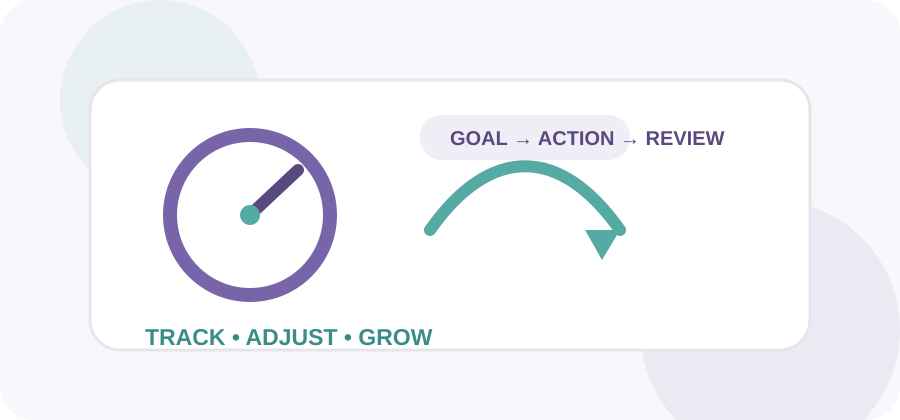

ProcrastiNO! / About
Sobre el proyecto
Conoce el propósito, estructura y funcionamiento de la aplicación.

Propósito
ProcrastiNO! es un recurso educativo multimedia bilingüe para estudiantes universitarios, centrado en gestión del tiempo, bienestar digital, productividad y hábitos académicos.
La estructura conserva cinco módulos y diez experiencias de aprendizaje.
¿Cómo funciona?
Cada una de las diez pantallas puede marcarse como completada. El progreso se guarda en el navegador y la barra del inicio se actualiza según las experiencias completadas.